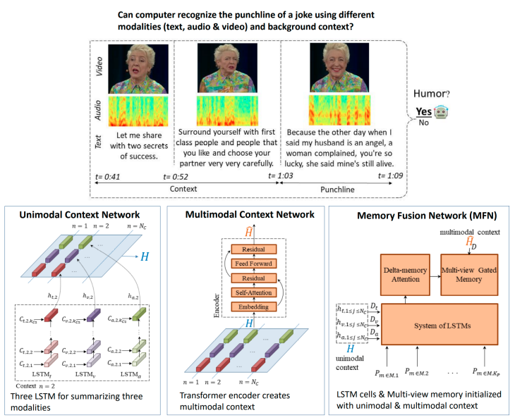
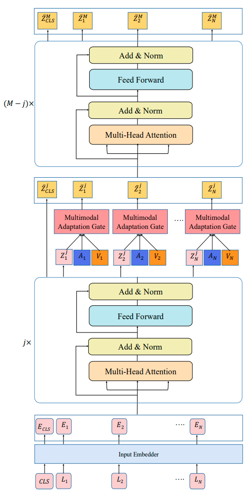

Research Projects
Multimodal Humor Understanding
Recognizing humor from a video requires understanding the verbal and non-verbal components as well as incorporating the appropriate background context. We have introduced UR-FUNNY- the first video dataset for humor detection task. 8257 humorous punchlines are presented, along with the prior sentences that build up their respective contexts. As negative data samples, 8257 non-humourous excerpts are also presented, where the last sentences are not followed by laughters. Total duration of the dataset is 90 hours. Importantly, unlike previous datasets where negative samples were drawn from different domains, UR-FUNNY draws the negative samples from the same videos as the humorous ones. This dataset has been collected from 1,866 videos featuring 1,741 TED Talks speakers using audience laughter signal. UR-FUNNY opens the door to the research community for studying multimodal cues involved in expressing humor.
We have developed a deep learning model to detect humor from the video utterance. The model is given a sequence of sentences (background context + punchline) along with vision and acoustic modalities. The goal is to detect whether the sequence will trigger immediate laughter after the punchline. The model has three components. The Unimodal Context Network has three LSTM (Long Short Term Memory) for capturing the unimodal summary of language, acoustic and vision used in background context. Then, Multimodal Context Summary use self attention mechanism to capture the interactions across these three modalities and create multimodal summary of background context. The last component is Memory Fusion Network that takes the language, acoustic and vision features used in punchline and try to predict the if the punchline is funny or not. During modeling punchline, it also takes input the unimodal and multimodal summary of context from the previous two component. That is the way it makes sure that punchline is model in light of context story.
Using this model we ran experiments to understand the importance of each modalities as well as the background context. We have found that all of these components are crucial for understanding the punchline of a joke.

Multimodal Sentiment Analysis
Human face-to-face communication is a complex multimodal signal. We use words (language modality), gestures (vision modality) and changes in tone (acoustic modality) to convey our intentions. Humans easily process and understand the emotion involved in face-to-face communication, however, comprehending this form of communication remains a significant challenge for Artificial Intelligence (AI). AI must understand each modality and the interactions between them that shape the contextual interpretation of our intention and emotions.
Recent Transformer based contextual word representations, including BERT and XLNet, have shown state-of-the-art performance in multiple disciplines within NLP. Fine-tuning the trained contextual models on task-specific datasets has been the key to achieving superior performance downstream. However, these pretrained models only work with language and do not have necessary component to accept other modalities like vision and acoustic.We designed an attachment to BERT and XLNet called Multimodal Adaptation Gate (MAG). MAG allows BERT and XLNet to accept multimodal nonverbal data during fine-tuning. It does so by generating a shift to internal representation of BERT and XLNet; a shift that is conditioned on the visual and acoustic modalities. During fine-tuning, this shifted vector modifies the internal state of the BERT and XLNet, allowing the models to seamlessly adapt to the multimodal input.
In our experiments, we study the commonly used CMU-MOSI and CMU-MOSEI datasets for multimodal sentiment analysis. Fine-tuning MAG-BERT and MAG-XLNet significantly boosts the sentiment analysis performance. We have achieved superior performance on both datasets compare to the all baselines methods and establish new state or the art baseline. On the CMU-MOSI dataset, MAG-XLNet achieves human level multimodal sentiment analysis performance for the first time in the NLP community.
